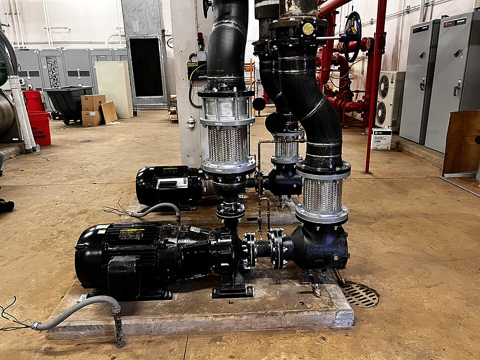

Trace a machine chiller’s low-flow alarm
Compare actual coolant flow with the reported flow before quoting a pump, sensor or controller.
Identify the separate cooling unit
A machine chiller circulates coolant through equipment and rejects the heat it collects. Track tank → pump → chiller outlet → cooled machine → chiller inlet on a checklist. The controller may see flow and temperature separately. Find the chiller model, its two ports, flow reading and alarm at the external display. Ludhiana’s Central Tool Room shows a laser welding machine with a separate white CW-5200 chiller. Keep the laser isolated and its safeguards intact during cooling service. Find “Laser Welding Machine” in the Central Tool Room report for the installed photo · TEYU CW-5200 front and rear product views.

Photo by IanVG, resized with labels added. Original photo · CC0.

Watch where the model reports flow · Find the displayed flow and the alarm threshold in the manufacturer's demonstration. Write the values and check the required limits from the actual cooled equipment. Keep the protection at its specified setting. TEYU CW-5000 and CW-5200 flow display.
Measure flow on a tabletop model without power
Set a small bottle of water on a stable platform with an outlet tube into a graduated measuring cup. Use a second empty container for spills. Keep it away from electrics. Make two marks on the source bottle and begin each run at the upper one. Time 15 seconds of flow, record the collected volume and repeat three times with the same physical setup.
Repeat with the outlet line partially pinched on the water-only model. Release the pinch and repeat from the same starting level. Compare the change with the original readings. For a 15-second draw, multiply the volume in litres by four to get litres per minute.
Have a partner write an independent simulated display reading for each case and try deciding which side has the fault. Compare with the exercise data below. Use the training values only on this model. For a customer machine, the service technician uses an approved reference and procedure on the complete coolant loop.
| Water trainer collection in 15 s | Calculated flow | Simulated display | Next check |
|---|---|---|---|
| 250 mL | 1.00 L/min | 1.00 L/min | Record the normal reference. |
| 100 mL | 0.40 L/min | 0.40 L/min | Investigate actual restriction, fluid level, leaks, air in the circuit and pump operation. |
| 250 mL | 1.00 L/min | 0.00 L/min | Check how the model measures flow, its sensor wiring and the configured input. A good reference reading shifts the investigation to measurement and indication. |
Write the field handover
Record chiller model, alarm, coolant level when safe to observe, specified minimum flow, measured flow and temperature at stable load. Identify the test point and calibration of the measuring tool. Leave mains, refrigerant and the laser enclosure to the appropriate equipment technician. The final cold-circuit repair needs proof of normal flow, temperature, alarm and interlock with the service procedure and the right person signing the equipment back into use. Manufacturer’s separation of blockage, sensor and pump faults.